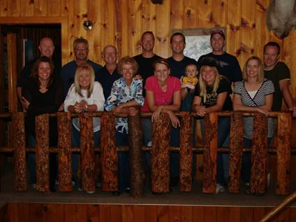
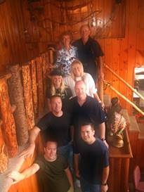

Chapter 59 – Year 2009
May 2009 Dentist (Spiritual Experience)
I didn’t like the dentist who replaced Dr. Cottle and he wanted to do so much work on my teeth and it would be very expensive, so I decided to go to another dentist and get a second opinion.
Bob, Ken’s brother, told me about his dentist in Roy and that he felt he was very good and reasonable in price, so I made an appointment and went. After checking my teeth, there wasn’t as much work needing to be done as this former dentist had told me, but still there was plenty. I went probably four to five times and it cost me well over $1,000. Later my bridge on my upper left side came off, so I went back in to Bob’s dentist. He fixed the tooth temporarily and put the bridge back on, but said it wouldn’t last as my teeth back there were bad and needed to be pulled and that I would need 3 posts put in. Those are really expensive. He also said my caps on my front teeth were worn out and needed to be replaced. He did a root canal, but couldn’t find the last canal, so didn’t put a crown on it, and said it needed to be done, plus other work. I told him we would have to wait. I came home very discouraged as we didn’t have that kind of money to pay for all that work. I decided to make it a matter of prayer. I asked Heavenly Father what I should do – should I get dentures, even though all the dentists had told me I shouldn’t. The thought came into my mind to call Aunt Banita (Uncle June’s wife) and I had a good feeling about getting dentures. I knew that Banita had dentures. I called her and asked her about her dentures and she said she loved them, that she had always had bad teeth, like mine, and was also always in the dentures office and spending tons of money on her teeth. She said she finally told her dentist to pull her teeth, that she wanted dentures. He told her she would regret it, but she said “Pull them anyway.” She said she has loved them and has never regretted getting them. She told me who her dentist was and I was going to make an appointment to go to her dentist, but he was in South Jordan (over an hour away).
I went to church on Sunday and spoke to my friend, ? Larsen and I noticed how beautiful her teeth were. I went to pick her up to go walking the next morning and she didn’t have her teeth in. I didn’t know she had dentures. We talked about them and she said she loved them and her husband had dentures and he loved them too. I asked her who her dentist was and she said “Dr. Gray in Kaysville, and said he was LDS and a wonderful man and great dentist”. I was excited, so I called the next day to make an appointment.
After examining my teeth and me telling him about the problems I had had with them all my life, he agreed that I needed dentures on the top, but said he wouldn’t have them on the bottom as they never fit right since the tongue is in the way. He said my bottom teeth and bridges looked fine anyway. I made the appointment to have the top teeth pulled. Ken went with me. I was amazed that after deadening the teeth, they came out so easily. He had made the molds and put the new dentures in and told me to leave them in until the next appointment or otherwise the gums would swell and I wouldn’t be able to get them back in. He told me how to take care of them.
Well, to make a long story short. I got along great! My teeth look beautiful and many have told me that too. I can eat almost anything and I surely haven’t regretted getting them, I wish I had done it years ago, like Ken wanted, and they would have saved us tons of money – although, maybe I was supposed to wait and get this great dentist. The Lord surely answered my prayer.
2009 (email to family)
Dear family,
I have been thinking for some time about having an Easter egg hunt again this year, but since Easter is in March - a week away and we had snow last Saturday and it has been cold since, I'm not sure if it would be wise to have it next Saturday. I'm wondering about having it three weeks from Saturday. Maybe the weather would be better then. I thought we would do practically the same thing as we did a couple of years ago - have the Easter egg hunt at 10 am, play games and relays, eat - barbacue hamburgers, hot dogs, chicken or steak (whatever meat you would like to bring for your family) and bring salads, chips, vegetable trays and desserts. Dad and I would furnish a potato salad and drink for the meal and furnish the Easter eggs for the Easter egg hunt. We could visit and play games as long as you want, as dad and I won't plan anything else for that day. I'm looking forward to being together again, so hope you can make it. The tentative date would be Saturday, April 12th. This way you can do your own thing for Easter and yet we can still celebrate with an Easter egg hunt in April. What do you think? Let me know if this would be a good time for you.
I have heard about the "wheat shortage" from different people. Maybe you have heard about it too. I had heard that the LDS mills still had some, but I was talking to a friend yesterday in church and she said they are out too. She and her husband volunteer at the church mill in Kaysville every Wednesday. She said there was a rush on wheat and it is gone now. She said they had a truck come in last week and people knew it was coming in and within a few hours, it was all gone. She said she checks on the internet regularly and found it is a major concern worldwide. We hope you have already got some put away for your food storage. Maybe it isn't as big a concern as she and others are saying, but maybe it is.
It has been great getting together with most of you lately. Thanks for the Birthday dinners for dad, and time spent with you. We've enjoyed being with our newest grandbaby, Rachel Lyn, and her parents and brother. Dad wanted to celebrate his birthday at Lava and soak in the mineral tubs. He also wanted to go snowmobiling so he checked around and found the best place to do that was at Soda Springs in Idaho which is just 25 miles from Lava. Sandi and Nick went with us and we had a great time. We spent one night at Lava and one night at Soda Springs. The Trail Creek lodge was so fun there at Soda Springs. It is a bed and breakfast. We were the only ones there at that time, so it was really fun. The owner gave us a super deal since we were renting a double snowmobile for $120.00 and since we weren't there on a weekend. He gave us 2 rooms for $40.00 ($20.00 for each couple) and that included a wonderful breakfast of sausage, eggs, hash browns, toast and orange juice. The lodge had a large screen TV with a DVD player, hot tub, fireplace, tables to play games, etc. plus 25 miles of groomed snow mobile trails with lots of hills and valleys to play around on.
The four of us plan to go again next year, and we'd like to invite any of the rest of you to go with us. We will stay the two nights at the Lodge in Soda Springs rather than stay one night in Lava. They have several snowmobiles to rent. If you rent a snowmobile, they furnish the snowmobile outfits free. We had all of that for Wednesday afternoon, Wednesday night and most of the day on Thursday. It only cost us $76.00 a couple, (we shared the cost of the snowmobile and the rooms). Sandi said it was the most fun she has ever had snowmobiling.
This was the first time Nick has been snowmobiling and I asked him if he liked it and he said he loved it. If we go during the week, and if most of you wanted to go, we could rent the lodge for a good price. It has 7 bedrooms, plus lots of other space for sleeping bags. Let us know soon if you are interested as we need to make the reservations soon. The owner says that many people make reservations a year in advance.
Dad's Christmas or birthday gift from you - Dad's guided fishing trip in August is another fun trip we're looking forward to. We will take our boat and tent trailer and plan to stay the week at Flaming Gorge reservoir. Dad's guided trip for the big fish is for part of a day, but since we will be there, we wanted to stay a week. If any of you can come, we would love to have you. Sandi and Nick will be there as he will be on the guided trip too. Not sure if they are staying the entire week. That will be the week of August 4th through the 9th. I'm sure we will be going to East Canyon Reservoir again at least once or twice this summer and maybe to Willard Bay and take "Great Big Mable", so hopefully some of you can come during those times too.
Shellie and family will be coming up again in July, so we will have a "Girl's Day Out" again. We'll plan that later, but if you girls have any ideas for what to do or where to go, please let me know. Shellie and family always like to go to Lagoon while they are here, so maybe some of you could go with us there too, plus we will have a family barbacue. We will have at least 2 or 3 more Saturday summer barbecues in our back yard too. If any of you have ideas for fun things to do as families or as couples, let us know that also.
Well, we hope you all have a wonderful Easter. Come see us when you can. We know you are all busy, but you don't need an invitation to come. We're always excited to see you when you can. We sure love you all. Mom & Dad, Grandpa and Grandma
We went snowmobiling at Trail Canyon Lodge for Ken’s birthday with Sandi & Nick again this year, so we are making it a tradition. We had a wonderful time again snowmobiling on the beautiful hills and roads, eating good meals that Sherrie prepared for us. She fixed gluten free, dairy free and sugar free meals for Ken, Sandi & I and made regular meals for Nick. That was great of her. We had a fun time playing games and visiting at night.
We celebrated our 50th anniversary this year on June 19th. My, it’s hard to believe Ken and I have been married for that many years. We have had our share of trials, like all of us do; but all in all, it’s been a great life together. Our love has continued to grow over the years.
Our six special children, Sandi, Shellie, Mike, David, Scott, Jeff and their spouses, planned a fun week for us at that time. They rented a lodge up in the pines outside of Soda Springs, Idaho. The people who own it fixed our meals while we went biking, hiking, 4 wheeling, fishing, swimming at Lava Hot Springs or soaking in the hot mineral pools there, visiting, playing games, sitting in the hot tub, or watching late movies on the big screened TV. We had such a good time.
It was just the adults there so we had lots of time to enjoy each other. Just before we all left to come home, our children presented us with a beautiful quilt they had made. It was Shellie’s idea and she asked the moms of each family to make quilt blocks for each member of their family. They were all so different, yet very special. They sent them to Shellie and she put them all together, adding family pictures and the picture of Ken and I, on our wedding day, in the center of the quilt with all the other blocks around them, and finished the quilt. We were so surprised and thrilled. We love it.
We were there from Monday through Friday. Friday night we went to the temple and on Saturday we had the baptism of Shellie & Roy’s son, Jase, at our church. They were coming from Arizona so wanted this side of the family to be able to attend this baptism. Jase’s other grandparents were able to attend also.
After the baptism, we went to David & Shauna’s home where we had a family party which included the grandchildren.
Since I got married right after I graduated from high school, it was also my high school class reunion this year, which they held in June. It was a grand event held at the Grand American Hotel in Salt Lake City. It was so fun to see my old classmates and their spouses and to reminisce on the past and get updates on what they have been doing since that time.
Ken and my 50th wedding anniversary on June 19, 2009 with our children and their spouses at Trail Canyon Lodge in the mountains east of Soda Springs, Idaho (I wrote this up twice, so decided to put both of them in.)
Our kids wanted to do something special for Ken and my 50th anniversary. They asked if we would like to have an open house since we have so many friends all over, or if we would like to go on a cruise with just
They, their spouses and Ken and I, or they asked if we wanted to go or do something else. Mike was hoping we would choose a cruise as he loves those. They hoped we wouldn’t choose an open house as they wanted to spend time alone with us for a few days, but they said if we wanted it, they would be glad to put one on for us.
The idea of spending several days alone with our children and their spouses, rather than an afternoon/evening opening house, appealed to Ken & I. We talked about going to Moab since some of our friends love it there and our sons have gone there and enjoyed it. Shellie didn’t want to go as it would be so hot in June, some of the others didn’t either.
Sandi with being the oldest was kind of in charge of planning it with their help. She was getting frustrated, as were we, as some of the children wanted to do one thing, while others didn’t and wanted to do something else.
We were about to give up and just have Ken and I go off by ourselves or else do the open house, when Sandi suggested Trail Canyon Lodge as they go with us there each February for Ken’s birthday and go snowmobiling. We thought that was a great idea and so Sandi called the others and told them we would like to go there. There is Lava Hot Springs not far away, Sherrie makes the meals for us and they are great, even gluten free/dairy free ones for Ken, Sandi & I. Not everyone was able to come for the entire week. Shauna was working so wasn’t in the above picture, but was there most of the time. Some of the others had to come late or leave early, Scott & Mishelle needed to bring one of their twins with them, but most were there most of the time, and we loved being with all of them.
We all had a great time together going to Lava and sitting in the hot mineral pools one night, going on the four wheelers all around, playing games, visiting, eating good meals and just hanging out together. Ken and I loved it, we love being with our wonderful children and their spouses. They all paid for Ken’s and my share of the expenses. The day before we left, they presented Ken and I with a beautiful quilt which Shellie put together, tied and bound with Pecos. She asked her sister and sister-in-laws to make a quilt block for each member of their families and put on things that represent that person’s hobbies, interests, or skills and then to get them to her by a certain date so she would have time to put them together and make the quilt. It was a beautiful quilt and we were so surprised, but thrilled. They gave us a beautiful card also.
We came home on Friday and Ken and I went to the temple as we always love to do that on our anniversary. It seems like Shellie & Roy went with us. On Saturday all our family came to our home for a backyard barbecue. We enjoyed being with our grandchildren as well as our children and spouses, so that climaxed our wonderful 50th anniversary.
We had a new grandson born in July to Jeff & Gail. They named him Matthew Lee and call him Matt. (This little guy was supposed to come to this family, he saved his parent’s marriage. He was how the Lord answered our prayers.) That makes 3 children for them and 20 grandchildren for us. We also have 5 great grandchildren. Sandi’s oldest daughter, JaNae has 3 plus a stepson, and her younger daughter, Chelci, has a little boy. We had two baptisms this year, Jase, Shellie & Roy’s son, and Maddi, Mike & Becky’s daughter. Our oldest grandson, Garrett, Shellie & Roy’s son, is serving his mission in Kennewick Washington. We love his letters. He will return next August. Jeff & Gail moved to Layton, so all of our children live close except for Shellie & Roy who still live in Arizona. They moved from Chandler to Queen Creek.
Ken and I keep busy with our church callings of Family History Consultants where we help the people in our ward and work at the Family History Center in Clearfield. This summer, along with the above trips plus several other trips with family, we enjoyed our garden and were able to can lots of vegetables and fruit. We now have rabbits and chickens too. Ken is still a sub school bus driver. We enjoy tending our grandchildren and being with our family. When we get a chance, we get some fishing in.
THANKSGIVING 2009
Thanksgiving was wonderful. We met at Bryce's church where Deanna, Bryce and Wendy and her children had set up tables, chairs and decorated the tables and the room. They had a Christmas tree which Wendy decorated with Thanksgiving and autumn decorations. She had asked Georgia & me to send her stories of our ancestors via e-mail and then she cut out the ones she wanted and pasted them on cards and put their names on the front. She hot glued them to small pumpkins as centerpieces. It looked so nice.
Me and each of my siblings cooked a turkey, Bryce and Deanna did the mashed potatoes, me, Jeanenne and Deanna made dressing. Georgia brought the candied yams. Each brought drippings from the turkeys and I made the gravy there, and everyone else brought salads, veggie trays, rolls, vegetables, pies - so we had so much food. It was delicious.
The next generations were anxious to start playing volleyball so they helped us clear off the tables and put the tables and chairs away and then they began their games. I love to watch them play. They are all really good.
Meliah came down and she had the younger children come to the nursery for a couple of hours after dinner and had crafts for the older children and the little ones played with toys while their mothers watched them and visited with each other. Paige and Nathan's wife, Jessica, helped Meliah. Everyone had a wonderful time. Misha, Kim & Jeanenne's cute daughter, brought her boyfriend. He is a really cute young man. They seem so in love, so that's neat.
I thought I would insert this article “Gods Come Cheap
These Days” By Chuck Baldwin
June 12, 2009, to show a little of what is going on in the world today. We are
living in a turbulent time with so much evil, crime, confusion, frustration,
corruption, etc.
This column is archived at
http://www.chuckbaldwinlive.com/c2009/cbarchive_20090612.html
When President George W. Bush was first elected back in 2000, I
well
remember the way Christian conservatives went gaga over him. They would deny
it, of course, but it was more than hero worship: they acted as if he were a
god. Life-size posters filled Christian bookstores. Religious broadcasters
and televangelists swooned over him like 16-year-old girls used to swoon
over Elvis Presley. Pastors invoked his name almost as a prayer. The
Religious Right acted like they had died and gone to Heaven. In the minds of
Christian conservatives, G.W. Bush could do no wrong. The result of all this
sophomoric silliness was that the Religious Right became blind, impotent
lackeys to a Big-Government, big-spending, Orwellian, and inept
administration--maybe one of the worst in U.S. history.
And all of this was not lost to the political left. They called
Christian
conservatives "dupes," "buffoons," "gullible,"
and a whole lot more. But now
it is the liberals' turn to take a voyage in the vehicle of villainous
vulnerability.
First, there was the major media's "anointing" of
President Barack Obama.
Yes, I use the word "anointing" on purpose. Make no mistake about it:
in the
minds of the major media, Obama was not inaugurated; he was canonized. No
pope, king, or potentate of history received the coronation that Barack
Obama received. To the liberals who dominate the news media and
entertainment industry in this country, Obama is not a President: he is a
god.
For example, did readers see the way NBC newsman, Brian Williams,
bowed to
his majesty, Barack Obama? (If you missed it, see it here
http://www.youtube.com/watch?v=YLYtHHxTTmc
)
Where are Keith Olbermann's eloquent rebukes of the Military
Commissions Act
(MCA), the suspension of Habeas Corpus, and many other Big-Government
intrusions into the private lives of the American people that were first
instituted under George W. Bush and that now continue under Barack Obama?
When he wants to, Olbermann can be a very convincing, articulate defender of
constitutional liberties. However, it seems that Olbermann is only
interested in constitutional government when it is a Republican trampling
it. Since Obama became President, Olbermann has not only muted his criticism
against unconstitutional policies emanating from the White House, he has
joined the chorus of mindless worship of the new President.
(Here are Olbermann's trenchant comments on President Bush's
support for the
Military Commissions Act and denying Habeas Corpus--something we will not
see from Olbermann regarding the same policies emanating from the Obama
White House: